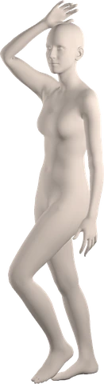
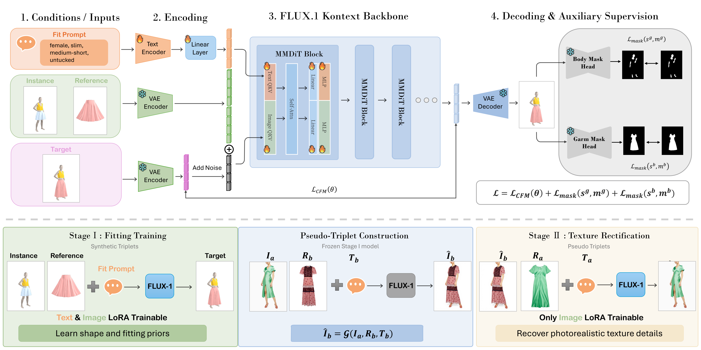

Abstract
FitVTON is a fit-aware virtual try-on model that generates authentic garment fitting effects across diverse body shapes. FitVTON encodes garment-body size as structured text prompts (e.g., “long-length upper garment” on a “slim, medium-tall body”) and learns fitting dynamics from physically simulated try-on triplets. A FLUX.1 Kontext flow-matching backbone is fine-tuned with modality-specific LoRA adapters and dual-branch garment/body mask supervision, then rectified on real images in a second stage to bridge the sim-to-real gap.
GarmentCodeVTON Explorer
Drag either orbit to rotate · click a card to bring it to front · use the arrows to switch body. Top orbit: garments · center: SMPL-X body · bottom orbit: simulated try-on for the current body.

Method

Highlights
- Simulation data pipeline. GarmentCodeVTON: 78K aligned triplets from GarmentCode + Warp XPBD (19 garments × 16 bodies × 10 poses; one-piece / tucked-in / untucked).
- Fit-aware flow-matching. FLUX.1 Kontext with dual LoRA adapters: text controls fit geometry, image handles garment transfer.
- Dual-branch mask supervision. Training-only U-Net heads on garment/body masks; mask-free at inference.
- Texture rectification. Stage II updates image LoRA on VITON-HD / DressCode pseudo-triplets; text LoRA frozen.
- FittingEffect3K. Real-world benchmark (3,350 triplets) with VLM fit scoring aligned with human preference.
Results
Fit-oriented protocol on FittingEffect3K (GPT-scored, 1–5; category averages across GB / T-L / SC / LF)
| Method | Upper Avg | Lower Avg | Dress Avg | Whole Avg |
|---|---|---|---|---|
| CatVTON | 2.62 | 2.09 | 1.95 | 2.30 |
| OmniTry | 3.00 | 2.15 | 2.40 | 2.55 |
| Any2AnyTryOn | 2.92 | 2.47 | 1.79 | 2.57 |
| JCo-MVTON | 2.96 | 2.71 | 2.15 | 2.74 |
| Nano Banana | 3.19 | 2.45 | 2.83 | 2.82 |
| FitVTON | 3.22 | 2.99 | 2.90 | 3.08 |
Human preference study on FittingEffect3K (20 participants, 100 cases, 2,000 selections; best fit vs. ground truth)
| Method | Selections ↑ | Ratio ↑ |
|---|---|---|
| FitVTON | 666 | 33.30% |
| Nano Banana | 517 | 25.85% |
| JCo-MVTON | 421 | 21.05% |
| OmniTry | 163 | 8.15% |
| Any2AnyTryOn | 147 | 7.35% |
| CatVTON | 86 | 4.30% |
Resources
- Paper: arXiv:2606.12012
- Code: github.com/ZenoNing/FitVTON
- Pretrained weights: huggingface.co/ZenoNing/FitVTON
- GarmentCodeVTON dataset (78K simulation triplets): huggingface.co/datasets/ZenoNing/GarmentCodeVTONDataset
- FittingEffect3K benchmark (3,350 real-world triplets): huggingface.co/datasets/ZenoNing/FittingEffectDataset
BibTeX
@article{ning2026fitvton,
title = {FitVTON: Fit-aware Virtual Try-On via Body-Garment Size Control},
author = {Ning, Yiqun and Shen, Ao and He, Chenhang and Zhang, Lei},
journal = {arXiv preprint arXiv:2606.12012},
year = {2026}
}